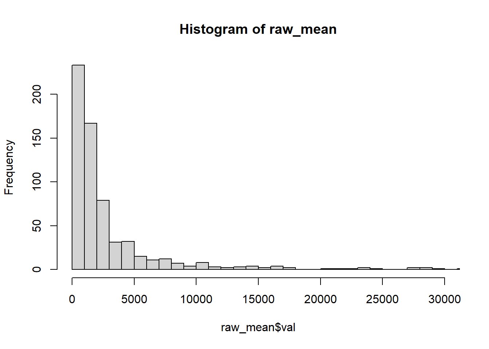
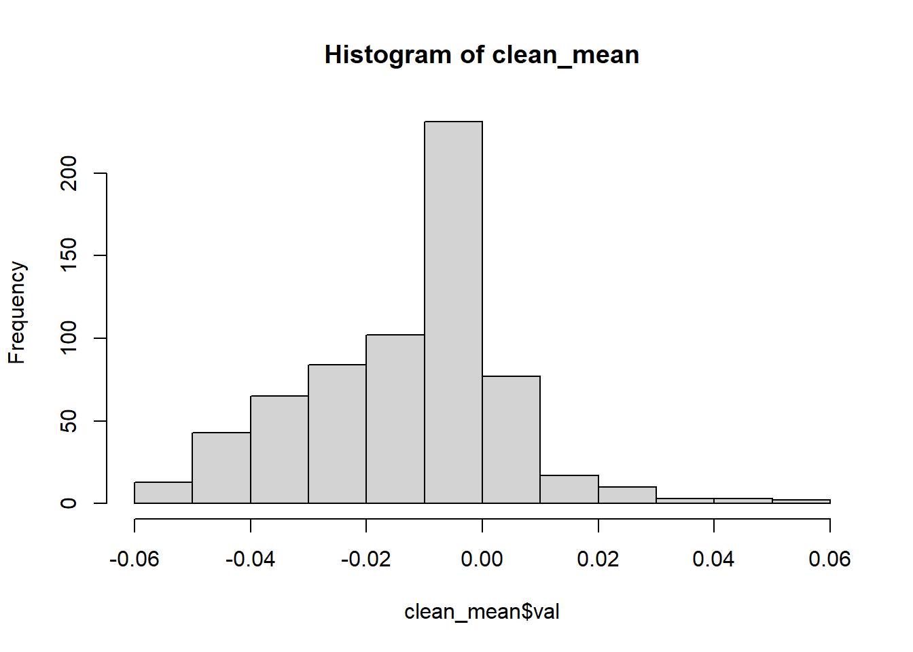
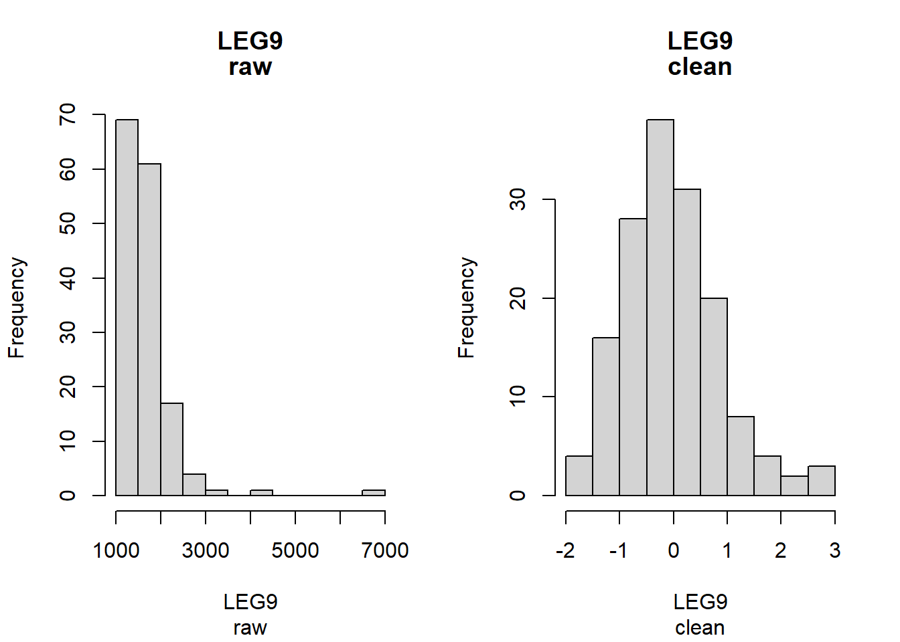
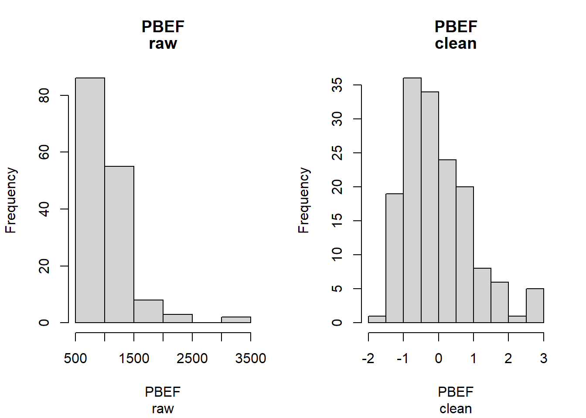
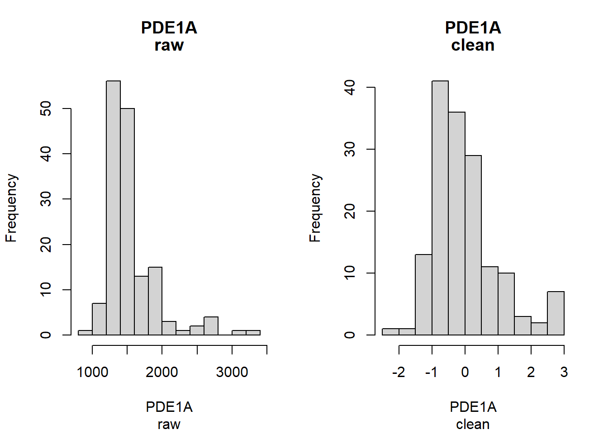
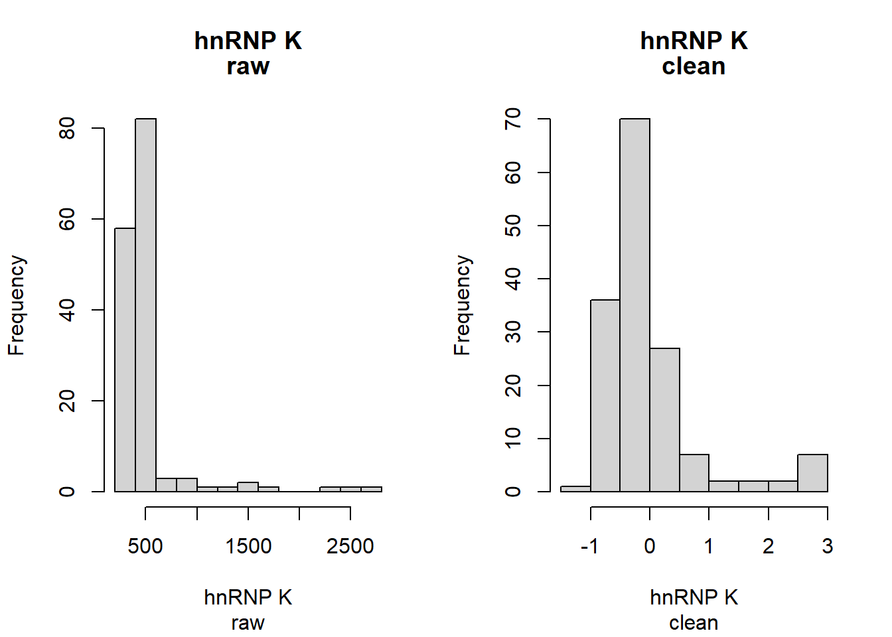
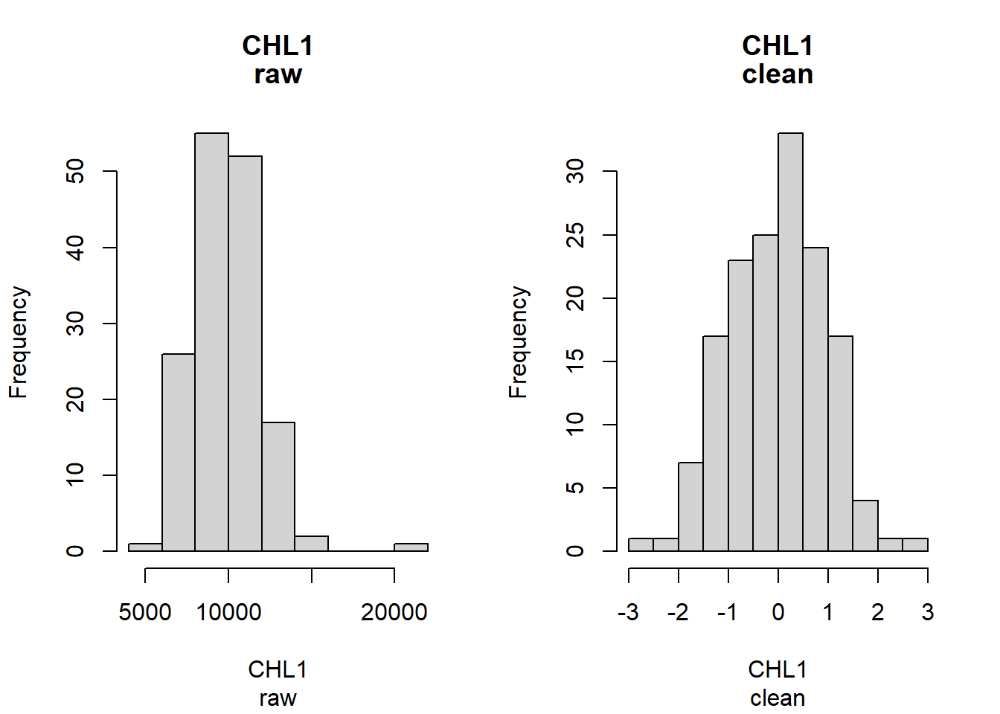
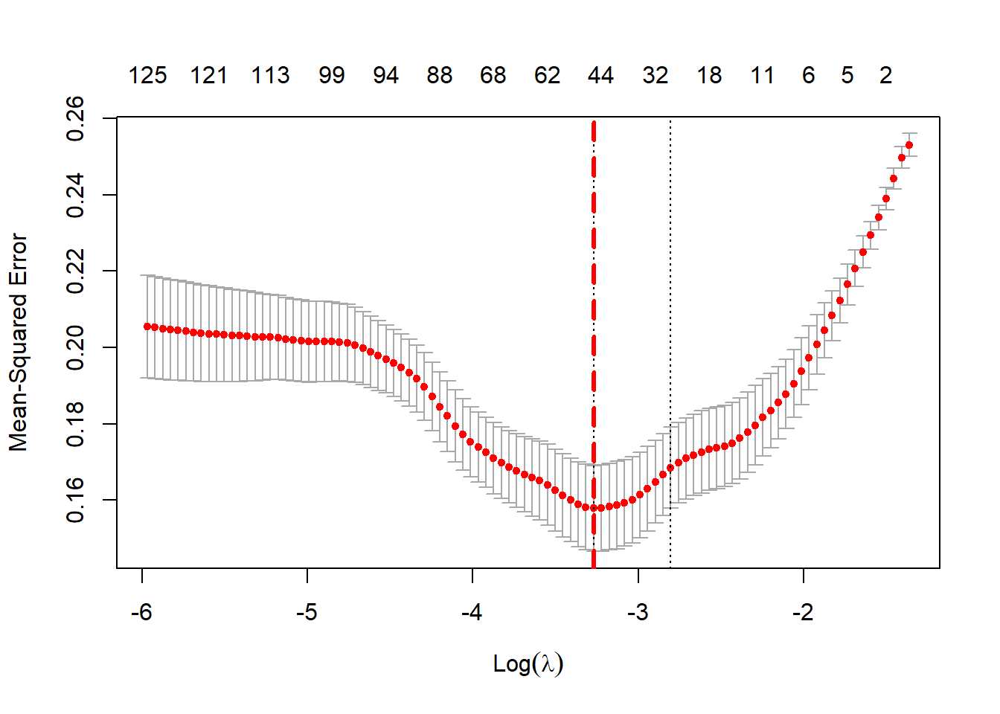

Biomarkers of ASD
Group 9
Abstract
In this report, we will mainly study the impact of preprocessing and outliers and methodlogical variations. In the preprocessing part, we mainly want to apply log transformation on the raw data to get the clean data. Log transformation could help us transform our data from an highly skewed distribution to a normal distribution, also decreasing the range of the data set. By doing so, we could decrease the prediction errors when we are doing the regression model.
To study the impact of outliers, we removed the trimming function and performed exploratory analysis on the outliers. This displayed that the outliers were largely biased towards the ASD group.
In order to find an improved classifier (panel of proteins to predict ASD), we fit a Lasso regression model to the data. This resulted in an alternative panel of 50 proteins with comparable classification accuracy to the in-class analysis of the study.
Dataset
# A tibble: 154 × 1,319
group ados CHIP CEBPB NSE PIAS4 IL-10…¹ STAT3 IRF1 `c-Jun` `Mcl-1` OAS1
<chr> <dbl> <dbl> <dbl> <dbl> <dbl> <dbl> <dbl> <dbl> <dbl> <dbl> <dbl>
1 ASD 8 619. 1489. 733. 1230. 1647 467 1041 3114. 1248. 490.
2 ASD 21 512. 1698. 2628. 1484. 1712. 548. 1214. 3188 868. 649.
3 ASD 12 438. 1122. 857. 1419. 1926. 413. 1222. 2373. 1203 496.
4 ASD 20 505 1210. 1394 1036. 1552. 523. 1982. 2652. 764. 523
5 ASD 22 441. 1120. 885 926. 1518. 524. 1422. 2374. 648. 693.
6 ASD 17 499. 1822. 658. 1087. 1651. 459 1203. 3050. 2717. 545.
7 ASD 15 664. 1583. 619. 1162. 1932. 434. 1421 3853. 708. 492.
8 ASD 10 334. 963. 940 777. 1706. 443. 1143. 2347. 850. 474.
9 ASD 22 504. 6044. 1821. 2555. 2814. 612. 1203. 7489. 2163. 5234.
10 ASD 17 663. 1215. 700. 929. 1761. 535. 1093. 2703. 914. 465.
# … with 144 more rows, 1,307 more variables: `c-Myc` <dbl>, SMAD3 <dbl>,
# SMAD2 <dbl>, `IL-23` <dbl>, PDGFRA <dbl>, `IL-12` <dbl>, STAT1 <dbl>,
# STAT6 <dbl>, LRRK2 <dbl>, Osteocalcin <dbl>, `IL-5` <dbl>, GPDA <dbl>,
# IgA <dbl>, LPPL <dbl>, HEMK2 <dbl>, PDXK <dbl>, TLR4 <dbl>, REG4 <dbl>,
# `HSP 27` <dbl>, `YKL-40` <dbl>, `Alpha enolase` <dbl>, `Apo L1` <dbl>,
# CD38 <dbl>, CD59 <dbl>, FABPL <dbl>, `GDF-11` <dbl>, BTC <dbl>,
# `HIF-1a` <dbl>, S100A6 <dbl>, SECTM1 <dbl>, RSPO3 <dbl>, PSP <dbl>, …# A tibble: 154 × 1,319
group ados CHIP CEBPB NSE PIAS4 `IL-10 Ra` STAT3 IRF1 `c-Jun`
<chr> <dbl> <dbl> <dbl> <dbl> <dbl> <dbl> <dbl> <dbl> <dbl>
1 ASD 8 0.335 0.520 -0.554 0.650 -0.358 0.305 -0.484 0.309
2 ASD 21 -0.0715 1.01 3 1.28 -0.133 1.13 0.253 0.408
3 ASD 12 -0.406 -0.531 -0.0592 1.13 0.554 -0.334 0.287 -0.845
4 ASD 20 -0.102 -0.251 1.47 0.0773 -0.705 0.893 2.61 -0.372
5 ASD 22 -0.395 -0.536 0.0410 -0.299 -0.830 0.899 1.01 -0.843
6 ASD 17 -0.126 1.27 -0.892 0.239 -0.344 0.216 0.211 0.221
7 ASD 15 0.486 0.748 -1.09 0.462 0.570 -0.0682 1.01 1.21
8 ASD 10 -0.990 -1.10 0.231 -0.885 -0.151 0.0307 -0.0346 -0.891
9 ASD 22 -0.108 3 2.32 3 2.76 1.70 0.209 3
10 ASD 17 0.485 -0.234 -0.697 -0.286 0.0331 1.01 -0.248 -0.293
# … with 144 more rows, and 1,309 more variables: `Mcl-1` <dbl>, OAS1 <dbl>,
# `c-Myc` <dbl>, SMAD3 <dbl>, SMAD2 <dbl>, `IL-23` <dbl>, PDGFRA <dbl>,
# `IL-12` <dbl>, STAT1 <dbl>, STAT6 <dbl>, LRRK2 <dbl>, Osteocalcin <dbl>,
# `IL-5` <dbl>, GPDA <dbl>, IgA <dbl>, LPPL <dbl>, HEMK2 <dbl>, PDXK <dbl>,
# TLR4 <dbl>, REG4 <dbl>, `HSP 27` <dbl>, `YKL-40` <dbl>,
# `Alpha enolase` <dbl>, `Apo L1` <dbl>, CD38 <dbl>, CD59 <dbl>, FABPL <dbl>,
# `GDF-11` <dbl>, BTC <dbl>, `HIF-1a` <dbl>, S100A6 <dbl>, SECTM1 <dbl>, …For the raw data, we obtained it from the study: Serum samples from 76 boys with ASD and 78 typically developing (TD) boys, 18 months-8 years of age, were collected. A total of 1,125 proteins were analyzed from each sample, since we measured 1,317 proteins, but 192 of them failed the quality control. However, we don’t know which ones failed quality control so will use all of them.
From the raw data, we want to get the clean data and save it as a data frame for future usage. Firstly, we get all of the variable names from the raw data. Then, we divide the raw data according to ASD and TD group, and put the values of each row into different variable columns. At the same time, we apply the trim function to for trimming the outliers in the data set and filter out the data that are not ‘-’ or ’’. Finally, we use the log transformation for all variables except group and ados to get the clean data and save it.
Summary of published analysis
Hewitson et al. used three computational methods in their study to find a panel of proteins with the highest predictive power for ASD. These three methods were: random-forest analysis, a t-test analysis, and a correction analysis with ASD severity. Each of these three methods produced a panel of 10 proteins with the highest predictive power for ASD. To optimize the predictive power of the model, they made the five proteins that were common to all three methods the ‘core’ proteins: MAPK14, IgD, DERM, EPHB2, and suPAR.
These five ‘core’ proteins were then used to train a prediction model to see if the remaining 13 ‘non-core’ proteins provided any predictive power when added. Four additional proteins from this test were added to the ‘core’ proteins because their addition added predictive power to the model. The researchers also examined the impact of ethnicity, age, medications, and other clinical diagnoses to check if any confounding factors affected their results, but found no significant influences. Thus, the final panel of “optimal” proteins consisted of these nine proteins: MAPK14, IgD, DERM, EPHB2, suPAR, ROR1, GI24, e1F-4H, and ARSB.
Findings
Impact of preprocessing and outliers
Log transformation (Kunxiao):







In this part, we mainly draw the histograms to see the distributions of the data before and after log transformations. Then, we try to compare and find the properties of the distributions after log transformation.
In part one, the data are collected from the mean values of 650 random selected variables before and after log transformations. In this case, we want to compare the distributions of the mean values before and after log transformations, which could represents the distribution of the whole data set. According to the two histograms above, it is pretty obvious that the distribution of mean values are highly right skewed. Besides, the range of the distribution is very large even if we set the xlim. However, after log transformation, it is easy to find that the range of clean distribution becomes much smaller (from -0.06 to 0.05), and the distribution are more centered to middle at x=0. Besides, compared to the raw data distribution, the new distribution are not that skewed to the right.
In part two, we mainly random select 5 proteins to see the distribution change of the single variable before and after the log transformation. In this case, we could find how log transformation affect the distribution of single protein level. Very Similar to what we observe for the distributions of mean values above, we could find that the first four raw distribution are skewed to the right with large ranges. For the last variable, CHL1, it also slightly skewed to the right. After log transformation, most new distributions become much likely to standard normal distribution centered at x=0, with range -3 to 3. Only for hnRNP K, its new distribution is still skewed to right because its original distribution is too skewed.
Therefore, it is easy to find that log transformation could help us transform our data from an highly skewed distribution to a normal distribution, also decreasing the range of the data set. There are a lot of advantage to do the log transformation. First of all, after decreasing the range of the data, we could easily cluster the means and variances of different variables to a small range, which could help us easily observe and operate them.
More important, if we want to make regression model with those data in the future, the original data might have some disadvantages. When modeling variables with non-linear relationships, the chances of producing errors may also be skewed negatively. In theory, we want to produce the smallest error possible when making a prediction, while also taking into account that we should not be over fitting the model. Over fitting occurs when there are too many dependent variables in play that it does not have enough generalization of the data set to make a valid prediction.Therefore, the transformed data could effectively decrease the dependency among variables to decrease the chances of over fitting model, and decrease the prediction errors at the same time. Thus, using the transformation of one or more variables improves the fit of the model by transforming the distribution of the features to a more normally-shaped bell curve.
Outliers Examination:
After removing the trim function from the preprocessing file, and saving the outliers into a separate data frame, our exploratory analysis uncovered a number of surprising results. Almost every subject (except for exactly 2) had at least one associated outlier variable, so simply examining the subjects with associated outlier variables would not be sufficient to reach a conclusion on why the values were trimmed from the dataset, or whether they should be excluded at all. After plotting the data, it can be easily seen that a few subjects exhibit markedly higher number of associated outlier values, so we chose to focus our analysis on these subjects instead. Examining the groups of these subjects, the majority were classed as ‘Typically Developing’. However, when we ran the same analysis on all subjects with outliers, the majority were classed ASD. Some possible explanations for this are that the subjects classed ASD are more prone to higher levels of characteristic proteins, in which case trimming the outliers may actually hinder our analysis.
Methodological variations (Allen Wang)
In the task 3, we modify some procedures we have done in the lecture to see how they influence the final result. First, we split the biomarker_clean data set into a 80 percent of training set and a 20 percent of testing set. Then, we repeat multiple t-tests, correlation test with ‘ados’, and random forests to select significant proteins to predict whether a person is ASD or not.
The multiple testing here utilizes t-test to infer the mean difference of each protein variable between “TD” and “ASD” groups: \(\delta_i = \mu^i_{ASD} - \mu^i_{TD}\) , where \(\mu^i_{ASD}\) is the mean serum level of protein \(i\) in the “ASD” group and \(\mu^i_{TD}\) is the mean serum level of protein \(i\) in the “TD” group. Then, we set \(H_{0i}: \delta_i = 0\) and reject this null hypothesis if \(|\frac{\hat \delta_i}{SE(\hat \delta_i)} > t_{\alpha}|\). Also, we use the Benjamini-Yekutieli Correction to limit false rejections. After implementing t-tests over 1000 times, we sort the adjusted p-values from smallest to largest to pick top 15 protein variables.
# A tibble: 15 × 6
protein p_value rank m hm p.adj
<chr> <dbl> <int> <int> <dbl> <dbl>
1 DERM 0.0000000557 1 1317 7.76 0.000570
2 RELT 0.000000667 2 1317 7.76 0.00341
3 C1QR1 0.00000110 3 1317 7.76 0.00374
4 TSP4 0.00000975 4 1317 7.76 0.0249
5 MRC2 0.0000172 5 1317 7.76 0.0352
6 IgD 0.0000202 6 1317 7.76 0.0345
7 OMD 0.0000223 7 1317 7.76 0.0325
8 Epithelial cell kinase 0.0000296 8 1317 7.76 0.0379
9 MAPK2 0.0000470 9 1317 7.76 0.0534
10 TGF-b R III 0.0000484 10 1317 7.76 0.0495
11 DAF 0.0000503 11 1317 7.76 0.0467
12 Nectin-like protein 2 0.0000520 12 1317 7.76 0.0443
13 RET 0.0000642 13 1317 7.76 0.0505
14 MATN2 0.0000670 14 1317 7.76 0.0489
15 Calcineurin 0.0000678 15 1317 7.76 0.0462 In the clean dataset, we have a “ADOS” column, which stores scores of ASD severity for ASD patience only. Thus, we want to explore correlations between ADOS scores and all protein variables and find out 15 proteins with the strongest correlation. I adopted the _SLR_ approach, in which p-values are derived along correlation coefficients. Here, I present the protein set and visualize those strong correlations. We can see that the absolute values of correlations range from 0.4 to 0.3, so they are significant values.
# A tibble: 15 × 3
protein estimate p.value
<chr> <dbl> <dbl>
1 C5b, 6 Complex -0.412 0.00108
2 CO8A1 0.388 0.00219
3 Thrombospondin-1 0.375 0.00317
4 ILT-2 -0.338 0.00836
5 GCP-2 0.328 0.0105
6 Angiogenin -0.327 0.0109
7 SOST 0.325 0.0113
8 Apo B -0.321 0.0123
9 Carbonic anhydrase 6 -0.319 0.0128
10 ZNRF3 0.319 0.0129
11 RGM-C 0.318 0.0132
12 HCE004331 0.313 0.0149
13 HCG 0.312 0.0151
14 CK-MM 0.305 0.0176
15 IL-1F8 0.304 0.0184 For the random forests method, we utilize a binary classification tree, where each tree node is defined by a protein variable. The random forests method builds up lots of trees using bootstrap samples and random subsets of predictors, and then it finds out which protein variables are used more often to define splits. We use variable importance scores to measure this feature, and select top 15 proteins with highest importance scores. We fix hyper-parameters “mtry” to 100 and “ntree” to 1000, and qualified proteins are presented below.
ASD TD class.error
ASD 40 20 0.3333333
TD 19 43 0.3064516| x |
|---|
| DERM |
| TSP4 |
| IgD |
| IL-18 Ra |
| RELT |
| MAPK14 |
| MAPK2 |
| HPLN1 |
| DKK3 |
| bFGF-R |
| eIF-4H |
| RET |
| TGF-b R III |
| TrkC |
| Epithelial cell kinase |
After that, we pick protein variables that appear at least two time in above protein sets, and we get the following core panel consisting of six proteins. This is the implementation of fuzzy intersection.
| x |
|---|
| DERM |
| RELT |
| TSP4 |
| IgD |
| Epithelial cell kinase |
| TGF-b R III |
Finally, we can use the core panel to fit a logistic regression model and test the accuracy on the testing set. There are three assumptions for the logistic regression:
- Observations are independent
- Probability of event is monotonic in each predictor
- Mean-Variance relationship following Bernoulli distribution
By maximizing the likelihood function, we get the following result.
| term | estimate | std.error | statistic | p.value |
|---|---|---|---|---|
| (Intercept) | -0.1601217 | 0.2247591 | -0.7124147 | 0.4762080 |
| DERM | -0.8216690 | 0.3571905 | -2.3003665 | 0.0214275 |
| RELT | -0.4445642 | 0.3823578 | -1.1626917 | 0.2449546 |
| TSP4 | 0.0249448 | 0.3296118 | 0.0756795 | 0.9396741 |
| IgD | -0.6906247 | 0.2605652 | -2.6504865 | 0.0080376 |
Epithelial cell kinase |
-0.0509076 | 0.3634439 | -0.1400700 | 0.8886046 |
TGF-b R III |
-0.2625583 | 0.3379087 | -0.7770094 | 0.4371532 |
# A tibble: 4 × 3
.metric .estimator .estimate
<chr> <chr> <dbl>
1 sensitivity binary 0.75
2 specificity binary 0.875
3 accuracy binary 0.812
4 roc_auc binary 0.812The logistic regression models seems to be good at predicting “TD” group correctly since the specificity is 10% higher than the sensitivity, proportion of “ASD” group that are correctly classified.
Improved classifier
Lasso Regularization
To find a simpler/alternative panel of proteins, we decided to fit a lasso-regression model to the data to see which proteins were most influential to the predictive power of the model. A summary of our method to fit this model is as follows:
Partitioned the data into response and classifier training and testing data sets.
Fit a lasso-regression model and performed cross validation.
Found an optimal value of lambda and observed how it affected the MSE of our model’s prediction (see plot below).
Displayed lasso regression coefficients associated with the best value of lambda (0.038).
Most of our lasso regression coefficients were zero. Any zero coefficients demonstrated that the associated protein did not have predictive power in our model. So the proteins relating to the non-zero coefficients will be the proteins that have predictive power in the panel for predicting ASD. The non-zero coefficients are displayed below:

coef
(Intercept) 0.4971693686
CD59 0.0264127873
FAM3D 0.0227626673
FSTL1 -0.0373041688
CXCL16, soluble -0.0124962833
Protein S -0.0378722204
IGFBP-1 -0.0188415653
Kallikrein 11 0.0034660999
Met 0.0118969642
CCL28 0.0091535936
PAI-1 0.0203766419
Growth hormone receptor 0.0251244871
PTN -0.0115645010
PIK3CA/PIK3R1 -0.0169247915
FN1.3 -0.0078830891
b2-Microglobulin -0.0110664417
HGFA -0.0255777871
MP2K2 0.0001409431
PYY -0.0316053371
KPCT 0.0143590432
MAPK2 -0.0583522773
Granzyme B 0.0010612192
IL-6 sRa 0.0251988612
P-Selectin -0.0073501149
ENPP7 -0.0179260265
ENTP5 0.0548929456
PCSK7 -0.0076653638
ITI heavy chain H4 -0.0269041753
Coagulation Factor IX -0.0083561566
IgD -0.1016321317
Lysozyme -0.0006613871
DERM -0.0823179754
hnRNP K -0.0280353881
EPHB2 -0.0157144002
ILT-4 -0.0067936620
RELT -0.0188668976
SIG14 -0.0320680519
TAJ -0.0028384593
TWEAKR 0.0378274988
CD27 -0.0179790365
IL-17 RC 0.0440903806
SRCN1 -0.0284720848
bFGF-R -0.0050555615
Epo -0.0472502445
GDNF -0.0009487896
14-3-3 protein zeta/delta -0.0513968317
a-Synuclein 0.0264779935
CSRP3 0.0367761781
MIG 0.0011958390
PEDF -0.0066986382[1] "The testing MSE is: 0.106377882997425"Thus, from the results of fitting a lasso regression model to the data, we found the above panel of 50 proteins as influential in predicting ASD.
We can observe the prediction accuracy of our lasso regression model by calculating the test MSE, which is relatively low (0.106). This shows us that the model is fairly accurate in predicting which proteins are most influential in predicting ASD, and our findings are of comparible classification accuracy to the in-class analysis.
Additionally, compared to the results of the in-class analysis, our panel is larger and much broader, which might be better in avoiding overfit of the data and applying our findings to more general conclusions.